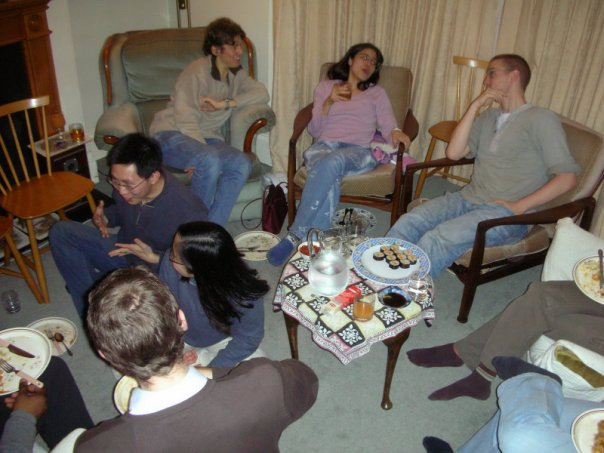

Our Mission

The Christian Graduate Society (CGS) aims to grow the Christian graduate community of Cambridge in faith and fellowship, and to reach out to fellow students with the good news about Jesus. We welcome Christian grads of all denominations as well as students looking to find out more about Christianity.
CGS Connect
Our core meeting `CGS Connect' meets as a fellowship of graduate students to encourage and pray for one another, grow in love for God, and learn how to share our faith in our colleges and departments. Our first meeting will take place on 17th October, at 10:30am, Sidney Sussex Know Shaw room (check Events page for updates). For dates, times, and topics, see our termcard.
- Connect with other Christian graduate students
- Pray with each other for Cambridge and the world
- Encourage one another from scripture and God's work in our lives
- Grow together as a community of graduates to reach the University for Christ
- Brunch!
Bible Study Groups
 We run three weekly Bible study groups that meet on Tuesday, Wednesday and Thursday evenings (usually starting at 7.30pm). These are graduate groups intended to be appropriate both for Christians and for those investigating the Christian faith. The group on Tuesday is located in the north of the river, and groups meeting on Wednesday and Thursday are located at Trinity College. Please do invite your friends!
Please email soc.cgs@gmail.com if you would like to join one.
Departmental Study and Prayer Groups
In addition, we are in contact with a number of departmental study and prayer groups.
Chemistry
The Chemistry group gathers every Wednesday at 12.30 in room U203 (Unilever Building, Department of Chemistry). We meet for a time of Bible study and prayer over lunch.
Group Contacts: Minkoo Ahn (ma505) and Alistair Brooks (agb47)
Biochemistry
The Biochemistry group meets every Wednesday in the Hopkins building (Department of Biochemistry) at 12.30 to 1.30 pm for fellowship and Bible study.
Group Contact: Alex Quintero-Yanes (aaq23)
LMB (Laboratory of Molecular Biology)
The group at the LMB gets together for a time of prayer on Friday mornings.
Group Contact: Julian Conrad (jc675)
West Cambridge Group
We are a group of students and postdocs from departments all over the West Cambridge site. We meet on Monday lunchtimes at 12:30 for Bible study, fellowship and prayer, at Merton Hall Farmhouse (on JJ Thomson Avenue). We usually bring our own lunches and eat together. You can sign up to our mailing list here: https://lists.cam.ac.uk/mailman/listinfo/ucam-wcs-christian-bible-study
Group Contacts: Joanna Waldie (jw353) and Daniel Thomas (drt24)
Chemical Engineering and Biotechnology
The group meets weekly for a time of prayer and on Wednesday at 12.30 for Bible study and fellowship.
Group Contact: John Suberu (js2126)
Engineering (Trumpington Road)
We meet for Bible study every Wednesday from 12.30 to 1.30 and for prayer on Friday mornings from 8.00 to 9.00 am.
Group Contact: Alex Komashie (A.Komashie@eng.cam.ac.uk)
Veterinary Christian Fellowship
We are a small group of vets who meet on Tuesdays from 1 pm at the Merton Hall Farmhouse for a short bible study and prayer. We welcome all vet students and those doing PhDs and postdocs in the department of veterinary medicine.
Group Contact: Lucy Mackintosh (lm564)
Leaving Cambridge?
If you are about to leave Cambridge and the CGS, firstly, we'll miss you! Secondly, this document contains details of some resources that may be helpful, particularly to those who are continuing in an academic environment and looking for scholarly Christian community (in addition to joining a local church). You may also wish to join the CGS alumni Facebook group to keep in touch with us and each other.